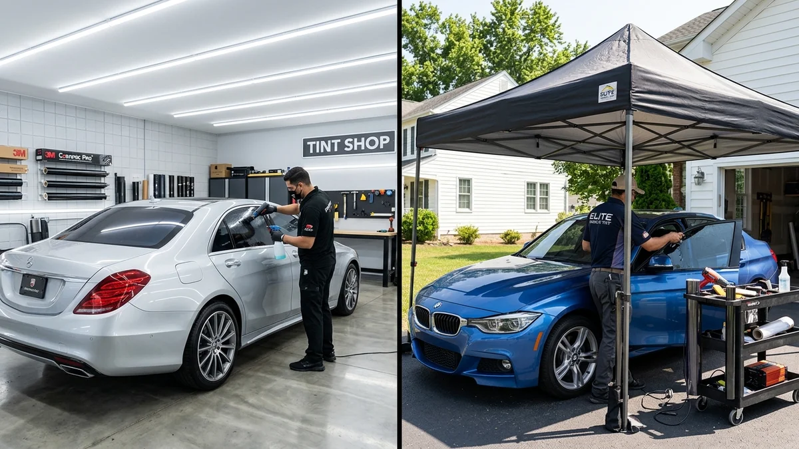
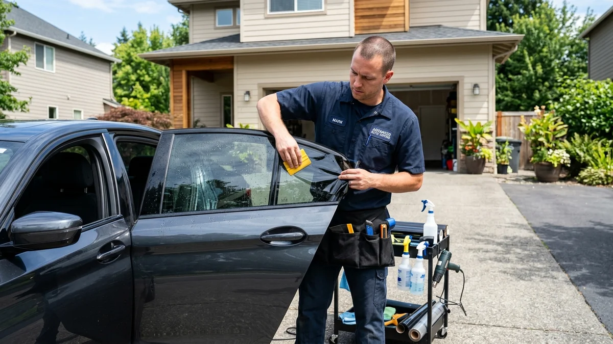
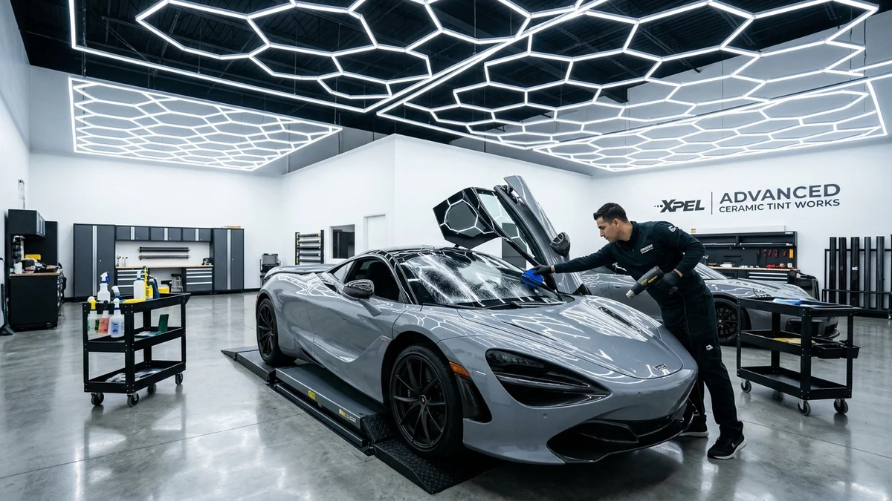

Mobile Window Tinting vs. In-Shop: Which is Better in Riverside?
By Riverside Tints | September 11, 2026

Convenience is king these days. You can have groceries delivered to your door, a mechanic change your oil in your driveway, and yes, even have your car windows tinted without leaving your couch. It sounds fantastic, right? But when it comes to automotive window tinting, is mobile service actually the better choice compared to bringing your vehicle into a dedicated shop?
As professionals who have seen (and fixed) the results of both, we want to give you the honest breakdown of mobile window tinting versus in-shop installation in the Riverside area.
The Appeal of Mobile Window Tinting
The primary draw of mobile tinting is obvious: extreme convenience. The installer comes to your home or workplace, meaning you don't have to arrange a ride or sit in a waiting room for hours.

However, the convenience comes with a massive caveat: the environment. Window tinting is an incredibly delicate process. The film is essentially a giant sticker, and any dust, dirt, or debris floating in the air can get trapped between the film and the glass. When you're outdoors in Riverside—especially with the dry wind and dust we frequently experience—achieving a flawless install is nearly impossible.
Even if the mobile installer uses a pop-up canopy, it cannot completely seal out the wind, pollen, and dust. The result is often a tint job with tiny, visible bubbles and specks of dirt permanently sealed against your glass.
The Superiority of In-Shop Installation
This is where in-shop installation takes the crown. A professional window tint shop, like our facility at Riverside Tints, is a controlled environment.

Here's why bringing your car to a shop yields a far superior result:
- Climate and Dust Control: Our shop is enclosed, clean, and climate-controlled. This prevents dust and wind from ruining the installation, ensuring a factory-perfect, bubble-free finish.
- Proper Lighting: We use ultra-bright, specialized LED lighting that allows our installers to see every microscopic detail of the glass and film. Mobile installers are often at the mercy of the sun, casting shadows that obscure imperfections.
- Access to Tools and Inventory: If a piece of film gets creased, or if a specific tool is needed for a tricky back window, we have our entire inventory on hand. Mobile installers are limited to what they can fit in their van.
The Final Verdict
While mobile window tinting might save you an hour of driving, it often costs you in long-term quality. For a permanent modification to your vehicle, the controlled environment of a professional shop is absolutely non-negotiable if you want a flawless, long-lasting result.
At Riverside Tints, we prioritize quality above all else. When you bring your car to our pristine shop, you're guaranteeing that your investment is protected from the elements during installation. Ready for a flawless tint job? Contact us today to schedule your appointment.